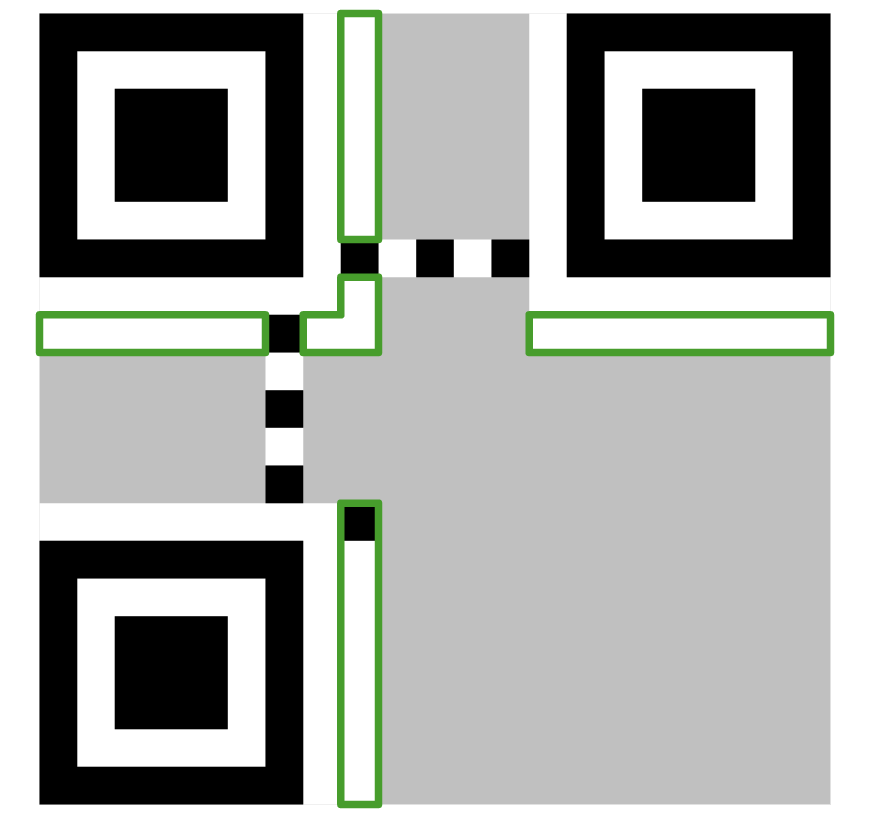
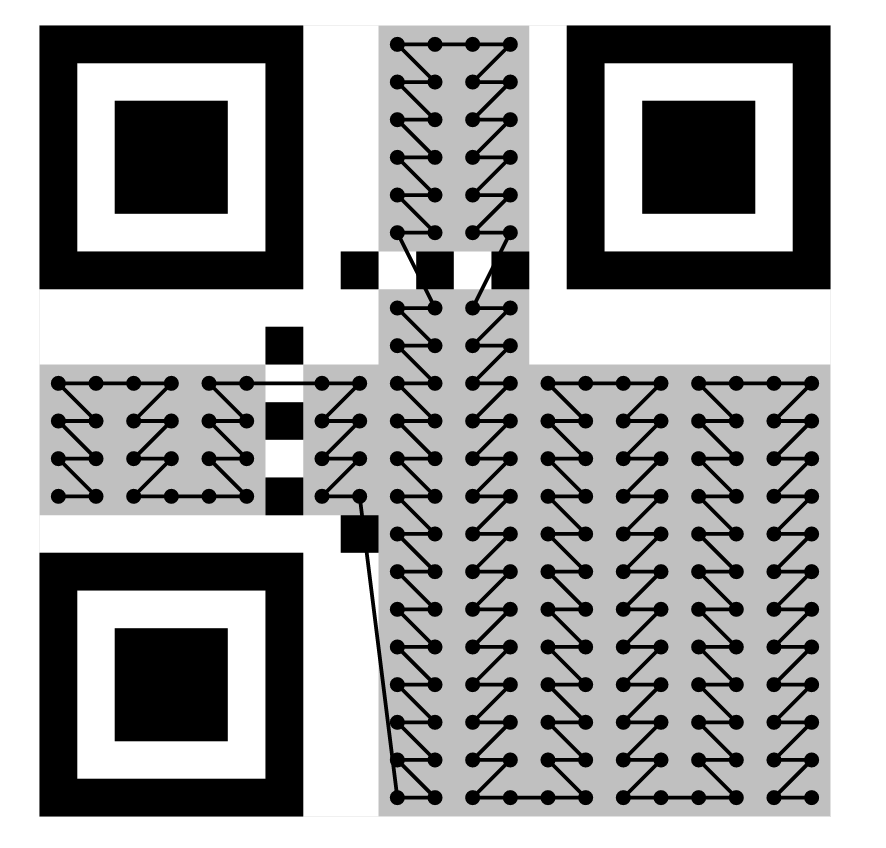

上篇博客 我们了解了二维码的历史 由来 各种强大之处，以及细致入微的 如何一步一步 生成一张包含信息的黑白格子图片的，仔细看下来 特别震撼的感觉，这篇博客 接着自上一篇 我们撸起袖子 来看看 怎么实现
把大象装冰箱 可以分三步，那么 生成一个二维码 要分几步呢？
第一步：分析输入字符编码集 上回说到，二维码是日本人发明的，每个字符的编码目标有四种：数字、字母、比特和日文。比如我们的输入 Hello,world! 123， 包含 字母 数字 和特殊符号，显而易见 我们只能选 比特 编码。
第二步：创建编码数据 这一步 需要将每一个输入的字符 转换成二进制，直接用 字符对应的 ascii 码对应的值，转换成二进制就好了,
Index
Char
values(hex)
Bits
0
H
48
01001000
1
e
65
01100101
…
这样一顿操作之后呢，我们会得到 如下信息
大概是这样一坨：
1 2 3 4 5 6 7 8 9 10 11 12 13 14 15 16 17 18 19 20 21 22 for (var i = 0 , l = this .data.length; i < l; i++) { var byteArray = []; var code = this .data.charCodeAt(i); if (code > 0x10000 ) { byteArray[0 ] = 0xf0 | ((code & 0x1c0000 ) >>> 18 ); byteArray[1 ] = 0x80 | ((code & 0x3f000 ) >>> 12 ); byteArray[2 ] = 0x80 | ((code & 0xfc0 ) >>> 6 ); byteArray[3 ] = 0x80 | (code & 0x3f ); } else if (code > 0x800 ) { byteArray[0 ] = 0xe0 | ((code & 0xf000 ) >>> 12 ); byteArray[1 ] = 0x80 | ((code & 0xfc0 ) >>> 6 ); byteArray[2 ] = 0x80 | (code & 0x3f ); } else if (code > 0x80 ) { byteArray[0 ] = 0xc0 | ((code & 0x7c0 ) >>> 6 ); byteArray[1 ] = 0x80 | (code & 0x3f ); } else { byteArray[0 ] = code; } this .parsedData.push(byteArray); }
第三步：找到合适的版本型号 确定纠错码 这一步主要是要根据上一步计算出来的数据，比如二维码容量，来确定选择哪个版本型号和纠错级别
1 2 3 4 5 6 7 8 9 10 11 12 13 14 15 16 17 18 19 20 21 22 23 24 25 26 27 28 29 30 for (var i = 0 , len = QRCodeLimitLength.length; i <= len; i++) { var nLimit = 0 ; switch (nCorrectLevel) { case QRErrorCorrectLevel.L: nLimit = QRCodeLimitLength[i][0 ]; break ; case QRErrorCorrectLevel.M: nLimit = QRCodeLimitLength[i][1 ]; break ; case QRErrorCorrectLevel.Q: nLimit = QRCodeLimitLength[i][2 ]; break ; case QRErrorCorrectLevel.H: nLimit = QRCodeLimitLength[i][3 ]; break ; } if (length <= nLimit) { break ; } else { nType++; } } if (nType > QRCodeLimitLength.length) { throw new Error ("Too long data" ); } return nType;
第四步：已有信息拼成 编码字 首先是 固定四子节的开头0010 + 根据版本和模式计算出来的数量值 00010001 + 数据段（那么一坨）+ 通常是 0000 组成的结尾 + 剩余直接用 0 填充。
所以 这样一套下来呢，二进制变成这样：01000001000101001000011001010110110001101100011011110
然后，将上面的二进制 用十六进制表示（每八个字节分成一组，再转换）：41 14 86 56 C6 C6 F2 C2 07 76 F7 26 C6 42 12 03 13 23 30
好了 可以进入下一阶段啦！
第五步：切块 计算接错码 纵横交错 这里用到了上一篇提到的 超级厉害的 里德-所罗门码。
将 数据 与 纠错码 合并后 转换成二进制，我们就得到了 可以绘制二维码的主要信息啦
第六步：画定位轴 先来一横一竖，再来三个回字形定位（7 * 7） 嗯 差不多了
1 2 3 4 5 6 7 8 9 10 11 12 13 14 15 16 17 18 19 20 21 22 23 24 25 26 27 28 29 30 31 32 33 34 35 36 37 38 39 40 41 42 43 44 45 46 Drawing.prototype.draw = function (oQRCode) { var _elImage = this._elImage; var _oContext = this._oContext; var _htOption = this._htOption; var nCount = oQRCode.getModuleCount(); var nWidth = _htOption.width / nCount; var nHeight = _htOption.height / nCount; var nRoundedWidth = Math.round(nWidth); var nRoundedHeight = Math.round(nHeight); _elImage.style.display = "none"; this.clear(); for (var row = 0; row < nCount; row++) { for (var col = 0; col < nCount; col++) { var bIsDark = oQRCode.isDark(row, col); var nLeft = col * nWidth; var nTop = row * nHeight; _oContext.strokeStyle = bIsDark ? _htOption.colorDark : _htOption.colorLight; _oContext.lineWidth = 1; _oContext.fillStyle = bIsDark ? _htOption.colorDark : _htOption.colorLight; _oContext.fillRect(nLeft, nTop, nWidth, nHeight); _oContext.strokeRect( Math.floor(nLeft) + 0.5, Math.floor(nTop) + 0.5, nRoundedWidth, nRoundedHeight ); _oContext.strokeRect( Math.ceil(nLeft) - 0.5, Math.ceil(nTop) - 0.5, nRoundedWidth, nRoundedHeight ); } } this._bIsPainted = true; };

继续啊
第七步：填充字码 肉眼可见的 即将大功完成

接着 按照z 字形顺序 依次填入 第五步计算出来的 二进制信息 1 黑格子 2 白格子
结束了吗？ 没有，机器会根据当前生成的二维码，继续优化，找到 大量空白 和 小黑格子聚集的地方，比如横向纵向 两个方向连续 5 个相同颜色区域， 2 * 2 相同颜色地方
下面两个函数相互调用 不断优化计算出来的二进制信息，最终生成一个看着很顺溜的二维码图像
1 2 3 4 5 6 7 8 9 10 11 12 13 14 15 16 17 getBestMaskPattern: function ( var minLostPoint = 0 ; var pattern = 0 ; for (var i = 0 ; i < 8 ; i++) { this .makeImpl(true , i); var lostPoint = QRUtil.getLostPoint(this ); if (i == 0 || minLostPoint > lostPoint) { minLostPoint = lostPoint; pattern = i; } } return pattern; }, make: function ( this .makeImpl(false , this .getBestMaskPattern()); },
github:qrcode